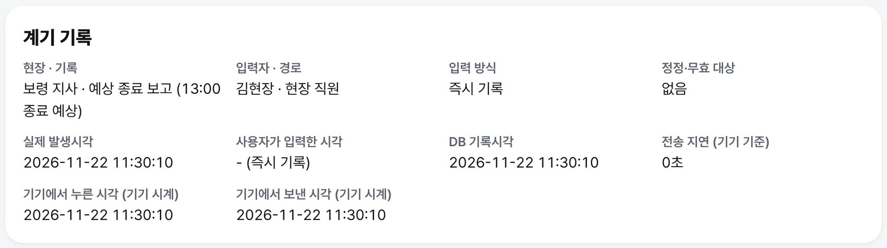
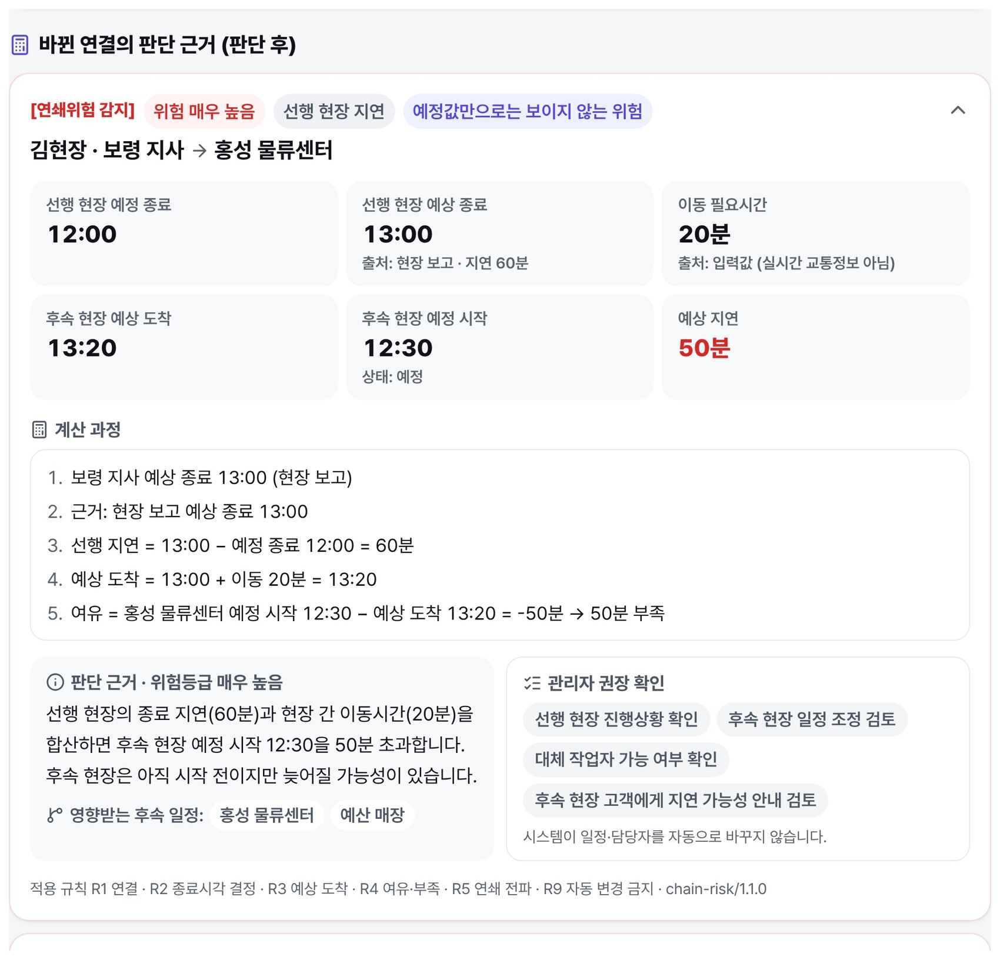
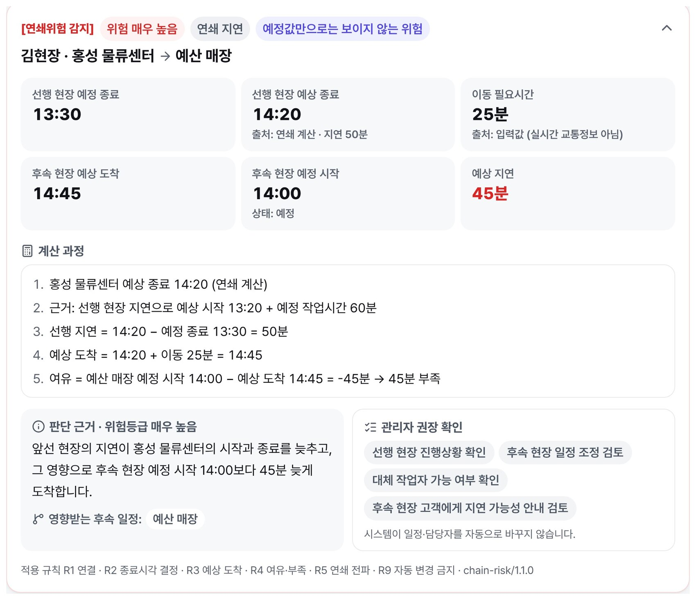
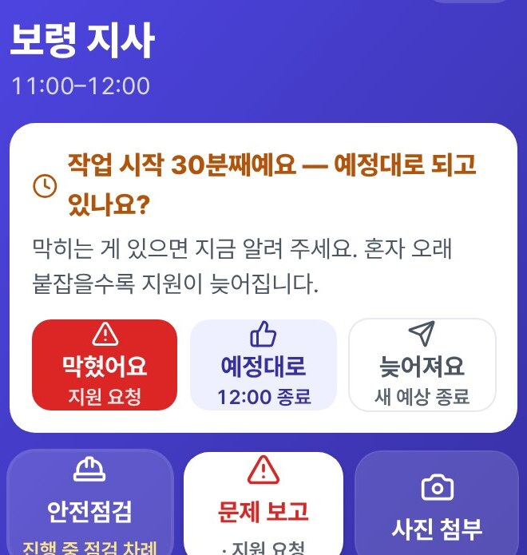
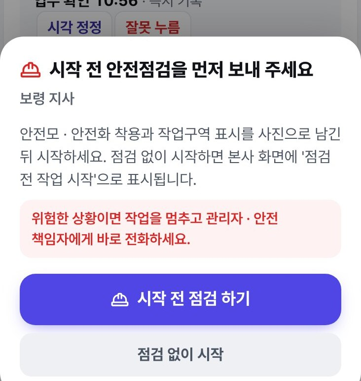
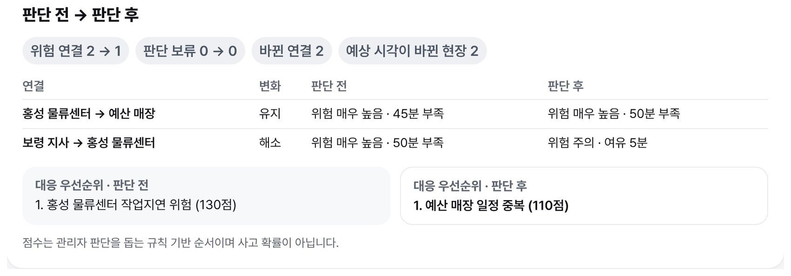
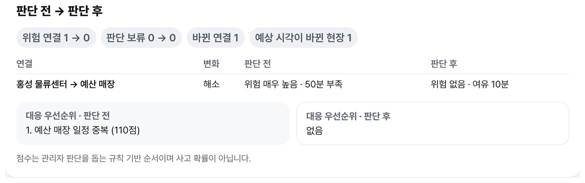

현장 휴대폰에서 받은 기록이 어떤 규칙으로 계산되어 본사 화면의 순서와 근거가 되는지, 계산식과 실제 판단 기록 화면으로 설명합니다. AI 예측이 아닌 규칙 기반 계산이며, 같은 입력은 언제나 같은 결과를 냅니다.
시스템 구성연쇄위험 계산식조기 확인 · 안전 게이트우선순위 · 재판단판단 기록
이 문서가 답하는 보완 요청
실제로 구현된 기술의 구조 (보완 요청 6 · 8)
핵심 계산 원리 — 다음 현장 지연 위험 계산
기록의 신뢰성 — 시각 구분 · 버전 · 지문 · 재계산 확인
신청기술복수 현장 업무 위험관리 AX 시스템
관련 특허출원 10-2026-0173957(2026-09-11 출원 · 등록 전)
기준 프로그램v0.6.1 · c74484cGitHub 저장소 커밋
작성일2026-11-23
H
(주)하나정보통신복수 현장 업무 위험관리 AX 시스템
보완자료 04기술 구성 · 작동 원리
시스템 구성
현장 휴대폰 → 서버 기록 · 계산 → 본사 PC, 그리고 조치가 다시 계산으로
① 현장기사 휴대폰
작업 시작 · 종료
바뀐 예상 종료 보고
문제 보고 · 지원 요청 · 사진
안전점검 3단계 · 착용 사진
본사 소식 · 바뀐 일정 받기
② 서버 — 기록
발생 · 입력 · 서버 시각 따로 저장
같은 요청은 한 번만 (중복 방지)
고치지 않고 추가만
사진 촬영정보(위치) 제거
역할별 접근 권한(RLS)
③ 서버 — 계산 규칙
조기 확인 규칙 0.1
작업상태 편차 state-deviation/1.0.0
연쇄위험 chain-risk/1.1.0
대응 우선순위 response-priority/1.0.0
판단 기록 · 지문(SHA-256)
④ 본사 관리자 PC
대시보드: 안전 → 막힘 → 사건 → 다음 현장
근거 · 계산 과정 보기
지원 결정 · 담당 · 현장 전달
일정 조정 → ③으로 다시
사건 증빙 PDF · CSV · JSON
개념 그림회사 개념 그림 — 현장 정보 입력 → 위험도 판단 → 관리자 알림 → 지원 · 일정 조정 → 조치 후 다시 분석. 알림은 자동 갱신(주기 확인) 방식입니다.
설계 원칙 5가지
AI 예측이 아닙니다. 정해진 규칙으로 계산합니다. 같은 입력이면 같은 결과입니다.
일정을 스스로 바꾸지 않습니다. 바꾸는 것은 관리자이고, 프로그램은 바뀐 값으로 다시 계산합니다.
점수는 확률이 아닙니다. ‘무엇부터 볼지’ 정하는 규칙 점수이고, 근거를 함께 보여 줍니다.
모르면 판단을 보류합니다. 이동시간이 없거나 시각이 잘못되면 ‘위험 없음’이 아니라 ‘확인 필요’로 따로 둡니다.
위급하면 사람이 먼저. 안전 미흡이면 프로그램을 기다리지 말고 작업 중지 · 직접 전화하도록 안내합니다.
H
(주)하나정보통신복수 현장 업무 위험관리 AX 시스템
보완자료 04기술 구성 · 작동 원리
입력 → 계산 → 결과
무엇을 받아, 어떤 규칙으로, 무엇을 보여 주나
입력 (누가 · 무엇)
계산 규칙
결과 (어디에 보이나)
기사 · 작업 시작 · 종료 버튼
작업상태 편차 — 단계별 기준시각 대비 늦음(분)
작업상태 편차 카드 · 예상 종료 갱신
기사 · 바뀐 예상 종료(+30분 · +1시간 · 직접)
연쇄위험 — 예상 도착 · 여유 · 부족 · 등급 · 전파
다음 현장 지연 위험 · 연쇄 영향 그림
(시간 경과) 시작 후 보고 없음
조기 확인 — 중간 확인 · 예정 넘김 · 지원 중
기사 ‘지금 할 일’ 카드 · 본사 ‘연락 없이 늦어짐’
기사 · 문제 보고 · 지원 요청 · 사진
사건 생성 · 우선 확인 순서(후속 영향 계산값)
문제 · 지원 목록 · 우선 확인 이유
기사 · 안전점검 3단계 · 착용 사진
안전 게이트 — 점검 없는 시작 · 종료 확인, 미흡 표시
안전 확인 필요(1순위) · 3단계 현황
관리자 · 지원 결정 · 일정 조정
같은 규칙 재계산 · 전후 비교 · 우선순위 변화
판단 전 → 후 · 판단 이력 · 기사 휴대폰
시각 기록‘언제’를 세 가지로 나눠 남깁니다 — 사후 입력도 구분됩니다
실제 화면관리자 PC판단 기록 상세 · 계기 기록

123
① 실제 발생시각 — 현장에서 일이 일어난 때 ② 사용자가 입력한 시각 — 나중에 입력하면 여기에 남음 ③ DB 기록시각 — 서버가 받은 때. 기기 시계와 전송 지연도 함께 남깁니다.
중복 방지
기사가 버튼을 두 번 눌러도, 전파가 끊겨 다시 보내도 기록은 한 번만 남습니다(요청마다 고유 번호).
추가만 기록
기록 · 판단은 고치거나 지우지 않고 추가만 합니다. 정정이 필요하면 정정 기록을 새로 남깁니다.
사진 보호
현장 사진의 촬영 위치 등 촬영정보를 지우고 비공개로 저장합니다. 변환에 실패하면 원본을 올리지 않습니다.
시각을 셋으로 나누는 이유 — 나중에 입력한 기록이 현장에서 실제로 일어난 시각처럼 보이지 않게 하기 위해서입니다.
H
(주)하나정보통신복수 현장 업무 위험관리 AX 시스템
보완자료 04기술 구성 · 작동 원리
핵심 계산 ① 연쇄위험
앞 현장의 바뀐 종료 + 이동시간 = 다음 현장 예상 도착
규칙 버전 chain-risk/1.1.0 — 같은 기사 · 같은 날 일정을 예정 시작 순으로 이어(R1), 앞 현장 종료 시각을 정하고(R2), 도착 · 여유를 계산해(R3 · R4) 등급을 매깁니다.
계산식
① 앞 현장 종료 = 보고된 예상 종료 (없으면 예정 종료) ② 예상 도착 = 앞 현장 종료 + 이동 필요시간 ③ 여유 = 다음 현장 예정 시작 − 예상 도착 ④ 부족 = 여유가 0보다 작을 때 그 크기
여유 · 부족
등급
여유 10분 이상
없음
여유 0~10분 미만
주의
부족 10분 미만
중간
부족 10~30분 미만
높음
부족 30분 이상
매우 높음
계산 예시 이번 사례
보령 예상 종료 13:00 + 이동 20분 = 도착 13:20 → 홍성 시작 12:30보다 50분 부족 · 매우 높음
실제 화면관리자 PC판단 기록 상세 · 판단 근거

12345
① 계산에 쓴 입력 6칸(출처 표시 — 이동시간은 입력값, 실시간 교통정보 아님) ② 계산 과정 1~5단계 ③ 판단 근거 문장 ④ 관리자 권장 확인 ⑤ 적용 규칙 · 버전
등급 기준(10분 · 30분)은 초기 운영 설정값입니다. 현장 실증 기록으로 보정할 계획입니다(10 고도화 계획).
H
(주)하나정보통신복수 현장 업무 위험관리 AX 시스템
보완자료 04기술 구성 · 작동 원리
핵심 계산 ② 연쇄 전파
다음 현장이 늦게 시작하면 그다음 현장도 이어서 계산합니다
늦게 도착한 현장은 작업시간을 유지한다고 보고 종료 시각을 다시 정한 뒤(R2), 그 종료로 다음 연결을 계산합니다(R5 연쇄 전파).
실제 화면관리자 PC판단 근거 · 홍성 → 예산

12
① 앞 현장(홍성) 예상 종료 14:20 = 지연된 시작 13:20 + 작업 60분 ② 예상 도착 14:45 → 예산 시작 14:00보다 45분 부족
계산 예시 전파 과정
보령 +60분 → 홍성 도착 13:20 (50분 늦음)
홍성 작업 60분 유지 → 14:20 종료
이동 25분 → 예산 도착 14:45 (45분 늦음)
한 번의 보고로 두 현장의 위험이 함께 계산됨
왜 중요한가
예정 시간만 비교하는 일정표는 ‘시간이 겹치지 않으니 괜찮다’고 봅니다. 이 계산은 바뀐 종료 + 이동시간을 넣기 때문에, 예정표에는 안 보이는 위험을 찾습니다. 화면에는 이를 ‘예정값만으로는 보이지 않는 위험’으로 표시합니다.
검증앞 현장 종료를 5분씩 늦췄을 때 — 엔진과 기존 겹침 검사 비교구현 확인
같은 A→B 일정(이동 30분 · B 11:40 시작)에서 A 예상 종료만 11:00~11:45로 바꾼 결과입니다(docs/evidence/delay-sweep.json). 기존 겹침 검사는 10가지 모두 위험을 찾지 못했고(예정 시간은 겹치지 않음), 연쇄위험 엔진은 여유가 줄어드는 순서대로 주의 → 중간 → 높음 → 매우 높음을 매깁니다.
H
(주)하나정보통신복수 현장 업무 위험관리 AX 시스템
보완자료 04기술 구성 · 작동 원리
막힘 · 안전 규칙
연락 없는 현장은 조기 확인 규칙이, 안전점검은 안전 게이트가 잡습니다
판정
조건 (조기 확인 규칙 0.1)
화면
중간 확인
작업 시작 뒤 예정 소요의 절반(최소 20분)이 지났는데 진행 보고 없음
기사: ‘예정대로 되고 있나요?’ 본사: 연락 없이 늦어짐
예정 넘김
예상 종료를 지났는데 새 보고 · 문제 보고 없음
본사 대시보드 앞쪽
지원 중
처리 중인 문제 보고가 있음 (본사가 이미 앎)
지원 진행 표시
정상
그 밖
—
상황
안전 게이트 동작
시작 전 점검 없이 ‘작업 시작’
먼저 묻고 점검 화면으로 안내 (그래도 시작하면 기록에 남음)
진행 중 점검 ‘미흡’
작업 중지 · 본사 직접 전화 안내, 본사 1순위 표시
관리자 확인
사진 육안 확인 → ‘적합’ 또는 보완 요청 (미흡은 적합 처리 불가)
마무리 점검 없이 ‘작업 종료’
먼저 묻고 마무리 점검으로 안내
사진으로 착용 여부를 자동 판정하지 않습니다. 관리자가 눈으로 확인한 기록을 남깁니다(사진 인식 AI 아님).
실제 화면기사 휴대폰11:30

12
중간 확인 — 기사 휴대폰이 먼저 묻습니다
실제 화면기사 휴대폰10:56

12
안전 게이트 — 점검 없이 시작을 누르면
H
(주)하나정보통신복수 현장 업무 위험관리 AX 시스템
보완자료 04기술 구성 · 작동 원리
우선순위 · 재판단
여러 위험을 규칙 점수로 줄 세우고, 조치하면 전후를 비교합니다
규칙 버전 response-priority/1.0.0 — 같은 연쇄는 한 항목으로 묶고(중복 계산 금지), 동점이면 이른 현장 → 항목 이름 순으로 고정합니다.
요소
점수 (초기 운영 설정값)
이번 사례
위험등급
중간 20 · 높음 40 · 매우 높음 60
매우 높음 60
예상 지연
1분당 1점 (최대 60)
50분 50
후속 현장 영향
첫 현장 외 1곳당 10
2곳 10
대응 시한
30분 내 15 · 60분 내 10 · 120분 내 5
60분 남음 10
업무 중요도
긴급 10 · 그 밖 0
0
합계
130점 · 1순위
실제 화면관리자 PC대응 우선순위 · 점수 계산 근거 펼침
12
① 1순위 ‘홍성 물류센터 작업지연 위험’ 130점 ② 점수 계산 근거 — 왼쪽 표와 같은 요소별 점수가 화면에 그대로 나옵니다
조치 후 재판단같은 사건에서 판단 기록 3건 — 위험 연결 0→2 → 2→1 → 1→0실제 화면
실제 화면관리자 PC① 보고 직후
신규 위험 2건 (50분 · 45분 부족)
실제 화면관리자 PC② 1차 조치(홍성 13:25)

보령→홍성 해소 · 홍성→예산 남음
실제 화면관리자 PC③ 2차 조치(예산 15:00)

남은 위험 0
판단은 매번 새로 추가됩니다 — 보고 직후의 위험 2건 기록도 그대로 남아, 조치가 무엇을 풀었는지 나중에 비교할 수 있습니다.
H
(주)하나정보통신복수 현장 업무 위험관리 AX 시스템
보완자료 04기술 구성 · 작동 원리
기록의 신뢰성
판단 한 건마다 입력 · 규칙 버전 · 지문을 남기고, 다시 계산해 같은지 확인합니다
실제 화면관리자 PC판단 기록 상세 · 판단 정보
12
① 연쇄위험 · 상태편차 · 우선순위 규칙 버전, 프로그램 버전(커밋), 판단 원문 지문(SHA-256) ② 재계산 확인 — 저장된 입력으로 다시 계산한 결과가 저장된 판단 전 · 후와 같음
입력 이상
엔진 처리
이동시간 없음
판단 보류 · ‘이동시간 확인 필요’
중간 일정 취소
판단 보류 · 출발지 · 이동시간 재확인 안내
잘못된 시각(25:70) · 날짜
그 기록 제외 · 데이터 확인 대상
시간 역전(12:30~11:40)
판단 보류
같은 일정 중복 입력
한 번만 계산
나중에 입력한 기록
입력 시각 별도 표시 · 사후 입력 구분
기록 보호
판단 기록은 서버에서 계산 · 저장 (화면 조작으로 바꿀 수 없음)
관리자만 열람 (역할별 접근 권한)
고치지 않고 추가만 — 지난 판단도 그대로 남음
판단 원문 JSON 내려받기 · 인쇄(PDF)
시험으로 확인
이 처리들은 자동 시험으로 고정돼 있습니다 — 엔진 시험 113건 · 실증 단위 시험 130건 등 전체 746건 통과(09 시험 · 검증 자료).
 개념 그림
개념 그림 12
12
 12
12